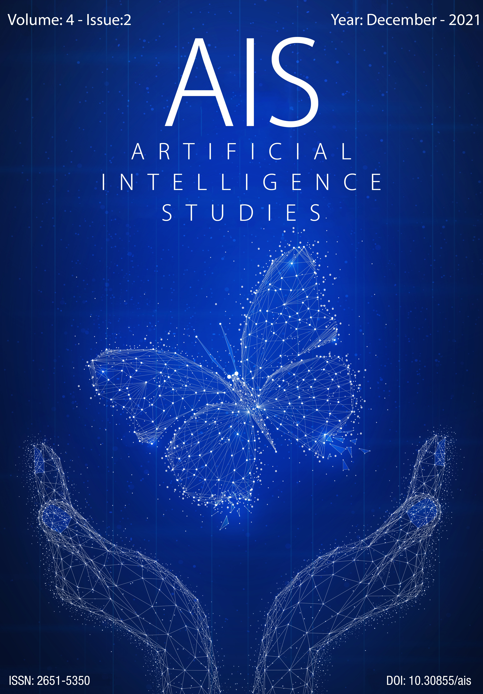
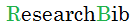

Skip to main content
Skip to main navigation menu
Skip to site footer
Anasayfa
Arşivler
Hakkında
Dergiler Hakkında
Editör EkibiS
Gönderiler
İletişim
Kayıt ol
Ara
Ara
Register
Login
Current Issue
Vol 4 No 2 (2021): December 2021

Yayın Tarihi:
31-12-2021
Articles
A Comparative Analysis with PART,JRIP and OneR Algorithms for Various Datasets
Rule Based Algorithms Comparison
Çağrı Dükünlü, Mehmet Uğraş Cuma
1-8
PDF
View All Issues
ISSN-e: 2651-5350
ISSN-e:
2651-5350
Yeni Gönderi
Indexes and Platforms

Hakkında
Okuyanlar
Yazarlar
Kütüphane Personelleri